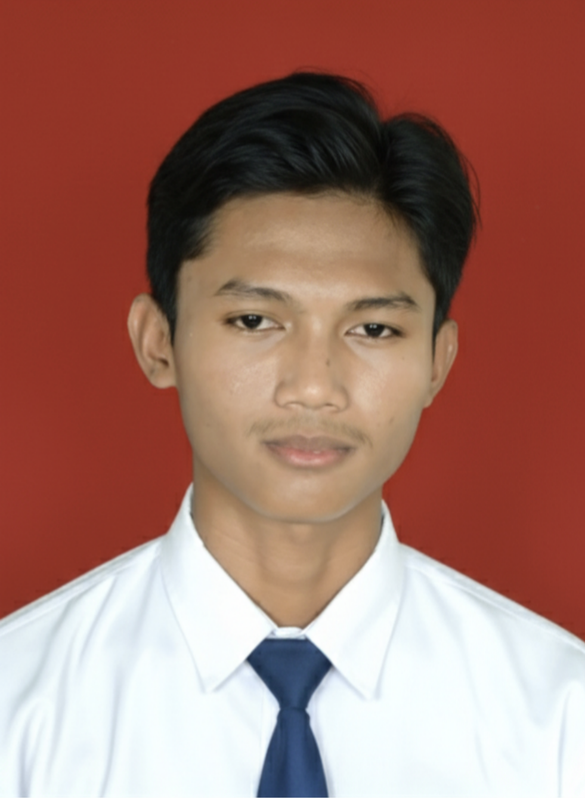

Dev Herlino Pratama Ramadan
Siswa SMKN 1 Leuwimunding
Biodata Lengkap
Nama Lengkap
Dev Herlino Pratama Ramadan
NISN / NIM
0098555658
Tempat, Tanggal Lahir
Majalengka, 22 Agustus 2009
Kelas / Jurusan
XI TJKT 2
Alamat
Kec. Leuwimunding Desa Ciparay
Riwayat Pendidikan
SMK Negri 1 Leuwimunding
Sekolah Menengah Kejuruan
MTs Nurul Ulum
Madrasah Tsanawiyah
SD Negeri Leuwimunding 3
Sekolah Dasar
Pengalaman Organisasi
Pengurus OSIS
2023 - 2024Bertanggung jawab mendokumentasikan kegiatan sekolah serta mengelola media sosial OSIS.
Pengurus PMR
2022 - 2024Berperan dalam tim medis dan pertolongan pertama pada kegiatan atau upacara sekolah.
Keahlian
HTML & CSS
Mulok PNETlab
Git & GitHub
Canva
Termux (Debian)
Hobi & Minat
Gaming
Photograph
Menggambar